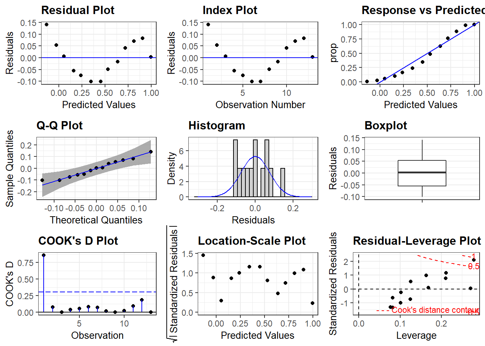
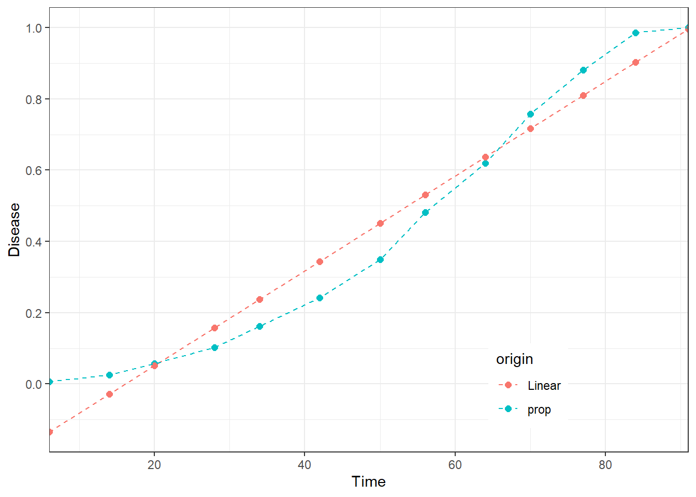

Temporal disease progress: Linear and non linear regression models
Mladen Cucak; Felipe Dalla Lana; Mauricio Serrano; Paul Esker
Libraries
list.of.packages <-
c(
"tidyverse",
"rmarkdown",
"gt", # package for customizing html table view
"DT", # similar as above
"kableExtra", # Another package for html table customization
"rcompanion", # Useful tool for summarizing model outputs and several other modeling related tasks
"conflicted", #Some functions are named the same way across different packages and they can be conflicts and this package helps sorting this problem
"here", #helps with the reproducibility across operating systems
"ggResidpanel", # Diagnostic plots for several models
"shiny", # Package for visualization
"shinythemes",
"shinydashboard",
"shinyscreenshot", #capture screenshots
"minpack.lm", # Fitting non-linear models
"deSolve" # Solvers for Initial Value Problems of Differential Equations
)
new.packages <-
list.of.packages[!(list.of.packages %in% installed.packages()[, "Package"])]
#Download packages that are not already present in the library
if (length(new.packages))
install.packages(new.packages)
# Load packages
packages_load <-
lapply(list.of.packages, require, character.only = TRUE)
#Print warning if there is a problem with installing/loading some of packages
if (any(as.numeric(packages_load) == 0)) {
warning(paste("Package/s: ", paste(list.of.packages[packages_load != TRUE], sep = ", "), "not loaded!"))
} else {
print("All packages were successfully loaded.")
}## [1] "All packages were successfully loaded."rm(list.of.packages, new.packages, packages_load)
#Resolve conflicts
# if(c("stats", "dplyr")%in% installed.packages()){
conflict_prefer("filter", "dplyr")
conflict_prefer("select", "dplyr")
# }
#
#if install is not working try changing repositories
#install.packages("ROCR", repos = c(CRAN="https://cran.r-project.org/"))Linear regression
Data from the previous exercise is loaded. We shall retain only two variables (time and disease levels) and a single year of data, in order to make the following content simpler to understand.
full_dta <-
readRDS(file = here::here( "data/temp_prog/test_data.rds"))
# Take only one year of data
dta <-
full_dta %>%
filter(yr == 1)%>%
select( dai, prop)Note: When working with dplyr it is
useful to have each operation after pipe %>% in next
line as it helps readability of the code.
Challenge: Try reading lines of code with pipes as a
sentence: Take the full_dta dataset, and filter it to get
only the subset from the first year…
Linear regression (or linear model) is used to predict a quantitative outcome of the response variable on the basis of one or more predictor variables. The general formula is:
\[ Y_i = \beta_0 + \beta_1 X_i + \epsilon_i \]
Linear regression is the simplest form of regression but it serves as a base for many other regression models. Basics of linear regression are well explained in several resources and here we cover the basics using R.
Fit model
Fitting models in R’s functional manner usually follows the same syntax, where:
Model to be fitted is the defined in the function (lm = linear model),
Model formula is the first argument, where the response variable is separated from predictors with
~, andadditional arguments. In this case, a dataset where variables are stored.
lin_mod<-lm(prop~dai, data = dta)Display model diagnostics of fitted linear model.
summary(lin_mod)##
## Call:
## lm(formula = prop ~ dai, data = dta)
##
## Residuals:
## Min 1Q Median 3Q Max
## -0.101813 -0.055089 0.003513 0.054235 0.141471
##
## Coefficients:
## Estimate Std. Error t value Pr(>|t|)
## (Intercept) -0.2149241 0.0459598 -4.676 0.000676 ***
## dai 0.0133122 0.0008261 16.114 5.35e-09 ***
## ---
## Signif. codes: 0 '***' 0.001 '**' 0.01 '*' 0.05 '.' 0.1 ' ' 1
##
## Residual standard error: 0.07889 on 11 degrees of freedom
## Multiple R-squared: 0.9594, Adjusted R-squared: 0.9557
## F-statistic: 259.7 on 1 and 11 DF, p-value: 5.35e-09The output above shows the estimate of the regression beta
coefficients (column Estimate) and their significance
levels (column Pr(>|t|). As the output of fitted model
is saved as a list (run str(lin_mod)to test this), all
elements of the above output can be accessed:
round(lin_mod$coefficients,2)## (Intercept) dai
## -0.21 0.01The estimated regression equation can be written as follows $ prop= -0.21 + 0.01dai$.
The overall quality of the linear regression fit, commonly referred
to as goodness-of-fit, is presented in in lower part of the
summary output. Common indicators are: Residual Standard Error (RSE),
R-squared (R2) and adjusted R2, and F-statistic,
which assesses whether at least one predictor variable has a non-zero
coefficient (large = significant).
Judging by all these diagnostics, our model seems to be doing well.
There is only one concern…
Question: What does the intercept of -0.21 mean in
terms of our data?
Question: What is the rate of disease progress over
time in the above summary of this model?
Question: Does this model provide statistically valid
and useful summary of the provided data? Why?
Model diagnostics
Diagnostic plots as used to test if the linear regression assumptions have been fulfilled, such as “normality” of residuals.
plot(lin_mod, which=1) #Model assumptions
plot(lin_mod, which=2)
plot(lin_mod, which=3)
plot(lin_mod, which=4)


A more visually appealing presentation with package
ggresidpanel:
resid_panel(lin_mod, qqbands = TRUE, plots = "all")
Question: What is presented in the Boxplot above?
(Hint: move the cursor to resid_panel() and press F1)
To learn more about this package visit their webpage by running the following command:
browseURL("https://goodekat.github.io/ggResidpanel/")This is only one of several packages developed for model diagnostics.
Note Remember, Google is always your best friend, you just need to know what to ask!
my_question <- "R model diagnostics"
browseURL(paste0('https://www.google.co.in/search?q=', my_question))Question: Plots of residuals reveal some problems
with this fit. Any ideas as to why?
At this point it would be good to visualize the model fit and compare
this with the original data. To do that, it is necessary to calculate
values (=predict) according to the fitted linear model.
dta[ , "Linear"]<-predict(object=lin_mod,newdata=dta[ , "dai"])
gt::gt(dta)| dai | prop | Linear |
|---|---|---|
| 6 | 0.006420546 | -0.13505081 |
| 14 | 0.025682183 | -0.02855314 |
| 20 | 0.057784912 | 0.05132012 |
| 28 | 0.102728732 | 0.15781779 |
| 34 | 0.162118780 | 0.23769105 |
| 42 | 0.242375602 | 0.34418872 |
| 50 | 0.349919743 | 0.45068639 |
| 56 | 0.481540931 | 0.53055965 |
| 64 | 0.619582665 | 0.63705732 |
| 70 | 0.757624398 | 0.71693058 |
| 77 | 0.881219904 | 0.81011604 |
| 84 | 0.985553772 | 0.90330150 |
| 91 | 1.000000000 | 0.99648697 |
Note: Data frame must be supplied as an object the
argument newdata.
Challenge: Why was dta[ , "dai"] used?
Can dta$dai be used? (Hint:predict() and
F1)
Question: Why are initial values of linear model
predictions negative? What would that mean in reality?
Visualize fit
The fitted model can be plotted to visualize the general characteristics of the linear fit, diagnose problems and decide on next steps. The data needs to be “melted” into a long format to be plotted.
dta_long <-
dta %>%
pivot_longer(cols = c("prop", "Linear"),
names_to = "origin",
values_to = "prop"
)Challenge: Add comments after each argument of the
function pivot_longer() which explain what do they
accomplish.
Finally, the data are ready for visualization.
ggplot(dta_long, aes(dai, prop, color = origin)) +
geom_point(size = 2) +
geom_line(linetype = "dashed") +
theme_bw() +
theme(legend.position = c(0.75, 0.15)) + #legend into a plotting area
scale_y_continuous(
limits = c(0, 1),
expand = c(-.05, 1.05),
breaks = seq(0, 1, 0.2),
name = "Disease"
) +
scale_x_continuous(
expand = c(0, 0),
breaks = seq(0, 80, 20),
name = "Time") +
guides(shape = guide_legend(nrow = 2, byrow = TRUE)) 
Note: We often recycle the code. This chunk of code is very similar to the one for visualization of different.
Challenge: Identify the crucial piece of code which makes this plot substantially different from the previous one in terms of visualization.
Question: Are the reasons for the lack of fit from the above clearer now?
Conclusion
In statistical (and practical) terms the conclusion is that linear model does a good job in describing the trend in data in this case. In practical terms, this means that the model told us that the level of disease is growing over time, hence there is a positive relationship between time and the level of disease. In statistics, this level of information is called descriptive statistics. However, if the goal is to better capture the nature of the process and make predictions, the analysis needs to be more complex, which is in domain of inferential statistics.
Using growth models to explore temporal disease progress
| Model | Differential Equation Form | Integrated Form | Linearized Form |
|---|---|---|---|
| Exponential | logy= logy0 + rt | y = y0exp(rt) | logy = logy0 + rt |
| Monomolecular | ln{1/(1-y)} = ln{1/(1- y0)} + rt | y = 1-(1-y0)exp(-rt) | ln{1/(1-y)} = ln{1/(1- y0)} + rt |
| Logistic | y = 1/[1 + {-lny0/(1- y0) + rt}] | y = 1/[1 + exp{-lny0/(1- y0) + rt}] | ln(y/(1-y) = ln{y0/(1- y0) + rt} |
| Gompertz | dy/dt = ry ln(1/y) = ry(-lny) | y = exp(lny0exp(-rt)) | -ln(-lny) = -ln(-lny0) + rt |
| Wiebull | dy/dt =
c/b{(t-a)/b}^(c-1)exp[-{(t-a)/b}c]
| |
y = 1-exp[-{(t-a)/b}^c] | ln[ln{1/(1-y)}] = -clnb + ln(t-a) |
The two simplest models of population growth use deterministic equations to describe the rate of change in the size of a population over time. In the case of plant pathology, this population would most often represent the levels of a disease in a field.
The first of these models, exponential growth, describes theoretical populations that increase in numbers without any limits to their growth.
The second model, logistic growth, introduces limits to reproductive population growth as the population size increases. In plant pathology, this shown by the idea that there is a maximum population size, or in more specific cases, that there are bounded limits to things such as disease intensity (0 to 100%).
Thomas Malthus,the English clergyman had a great influence on Charles Darwin, in developing his theory of natural selection. Malthus’ book from 1798 states that populations with abundant natural resources grow very rapidly; however, they limit further growth by depleting their resources. The pattern of accelerating population size is named exponential growth. Such development is characteristic of bacteria multiplication in a flask. However, resources are limited in the real world and such growth can be characteristic only in very early stages when a species gets established into a new habitat. Charles Darwin recognized this as the “struggle for existence”, where the individuals will compete with members of their own or other species for limited resources. Those which are more successful than others and are able to survive and pass pass on the traits that made them successful to the next generation at a greater rate, a phenomena known as natural selection. Logistic growth model was developed to model this reality of limited resources.
This population growth is often limited in several different ways, e.g. the rate of progress can be different in different parts of a season, determined by environmental factors, elements of host genetic resistance or human interventions. Hence, there are several variations of this logistic curve, one of them being Gompertz curve, named after Benjamin Gompertz (1779–1865). The main characteristic of this sigmoidal curve is that the mortality rate decreases exponentially as a person ages, or in th usual case in plant pathology, the rate of disease progress is lower as at higher disease intensity levels.
The monomolecular model has been used to described several phenomena in chemistry (hence the name) and biology (plant growth etc.). It is also called the negative exponential or restricted exponential model, as its rate is constantly decreasing. In plant pathology, it is often used to describe monocyclic epidemics.
They are plotted all together to explore their main characteristics and differences.
Any raw HTML content works here. For example, here is a Youtube video: